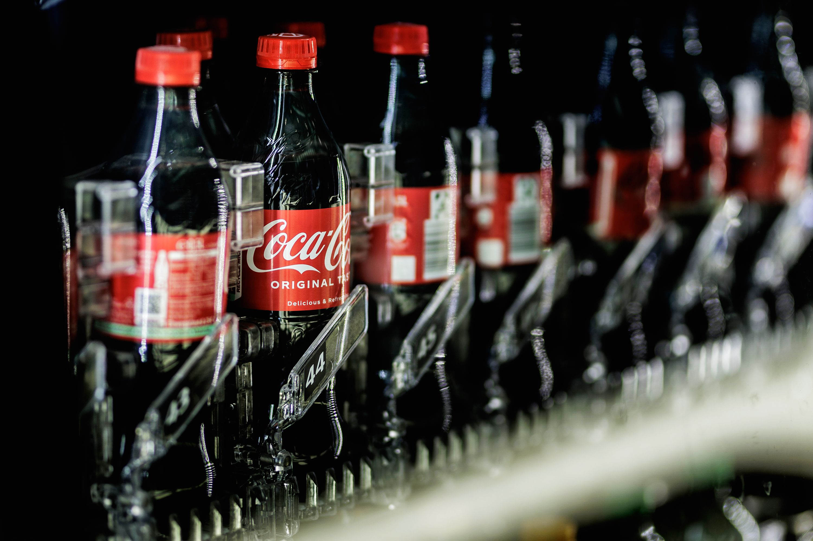

Coca Cola

Про компанію Coca-Cola
Coca-Cola — це не просто напій. Це бренд, що об’єднує покоління, культури та історії. Від свого заснування у 1886 році в Атланті, США, Coca-Cola стала однією з найвпізнаваніших компаній у світі, присутньою більш ніж у 200 країнах. Щодня понад 1,9 мільярда порцій нашої продукції споживаються по всьому світу. Це свідчить не лише про популярність, а й про довіру, яку ми вибудовували понад століття. В Україні Coca-Cola працює з 1992 року. Виробничі потужності компанії розташовані у місті Бровари, Київської області, де діє сучасний завод, сертифікований за міжнародними стандартами якості та безпеки. Coca-Cola в Україні є значним роботодавцем, надійним бізнес-партнером і активним учасником соціальних змін у регіоні. Наша діяльність охоплює розробку, виробництво та розповсюдження широкого асортименту безалкогольних напоїв: від класичної Coca-Cola до Coca-Cola Zero Sugar, Fanta, Sprite, Schweppes, Bonaqua, холодного чаю Fuzetea та соків Rich, «Добрий» і «Моя сім’я». Ми пропонуємо споживачам вибір: з або без цукру, з натуральними інгредієнтами, різних смаків і форматів — усе, щоб задовольнити потреби сучасного світу. Наше бачення — створювати стійкий бізнес, який приносить користь усім: споживачам, партнерам, громадам і планеті. Ми прагнемо бути компанією, що робить внесок у здорове, безпечне, екологічне та справедливе майбутнє. Місія Coca-Cola — освіжати світ і надихати на зміни. Ми не лише виробляємо напої — ми створюємо емоції, підтримуємо локальні громади, запускаємо соціальні ініціативи, розвиваємо культуру відповідального споживання. Для нас важливо, щоб кожна дія компанії мала значення: від зменшення вуглецевого сліду до повторного використання паковання. Екологічна відповідальність — один з ключових напрямів нашої стратегії. Ми впроваджуємо програми зі скорочення споживання води, енергії та шкідливих викидів. Активно працюємо над створенням упаковки, яку можна повністю переробити, а також інвестуємо у розвиток систем збору та вторинної переробки пластикових пляшок. Соціальна відповідальність для Coca-Cola — не порожні слова. Ми підтримуємо молодіжні ініціативи, освітні проєкти, програми підтримки жінок у бізнесі, інфраструктурні ініціативи в громадах, у яких працюємо. Під час кризових ситуацій ми швидко реагуємо — надаючи допомогу, продукти, ресурси та підтримку тим, хто цього потребує. Coca-Cola — це команда людей по всьому світу, які щодня працюють над тим, щоб зробити світ кращим. У нашій компанії цінують інклюзію, різноманіття, відкритість і співпрацю. Ми будуємо культуру взаємоповаги, розвитку та прозорості — як усередині компанії, так і назовні. Ми віримо, що велика компанія — це велика відповідальність. І кожен крок Coca-Cola — це рух у бік позитивних змін. Ми тут, щоб освіжати кожен момент. Ми — Coca-Cola.
↓Також нижче ви можете ознайомитись з нашою продукцією↓

.webp)
.webp)

.webp)
.webp)